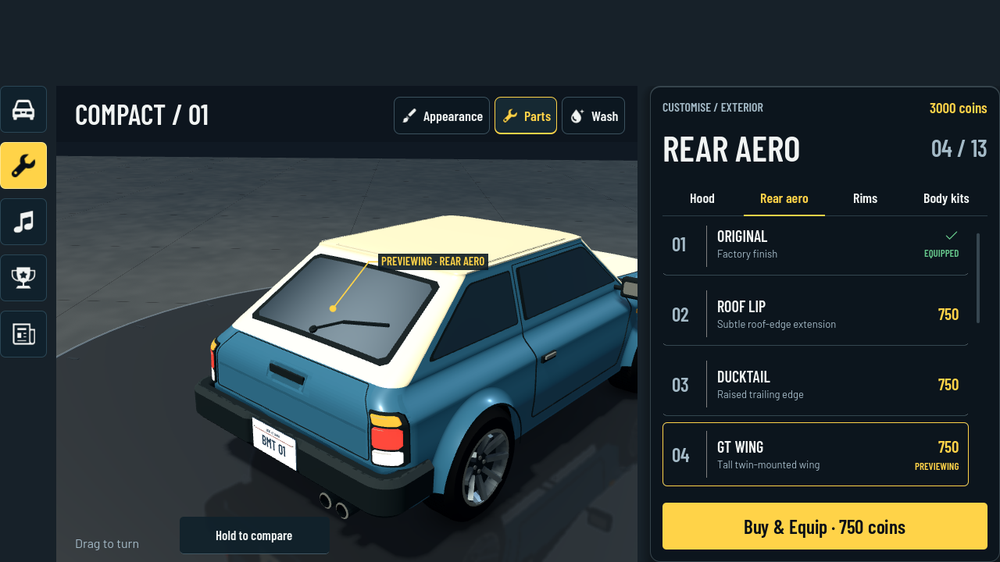

Actual Garage frames. A narrow light sweep assembles the changed fitting from bottom to top over 0.58 seconds. Equipped comparison remains immediate.

Hood halfway · Rims halfway · Body kit halfway · Commands and checks
Compatibility and desktop Mobile/Vulkan checks; physical-device testing was not performed. The replay uses captured progress frames with the transition's sine easing timing.